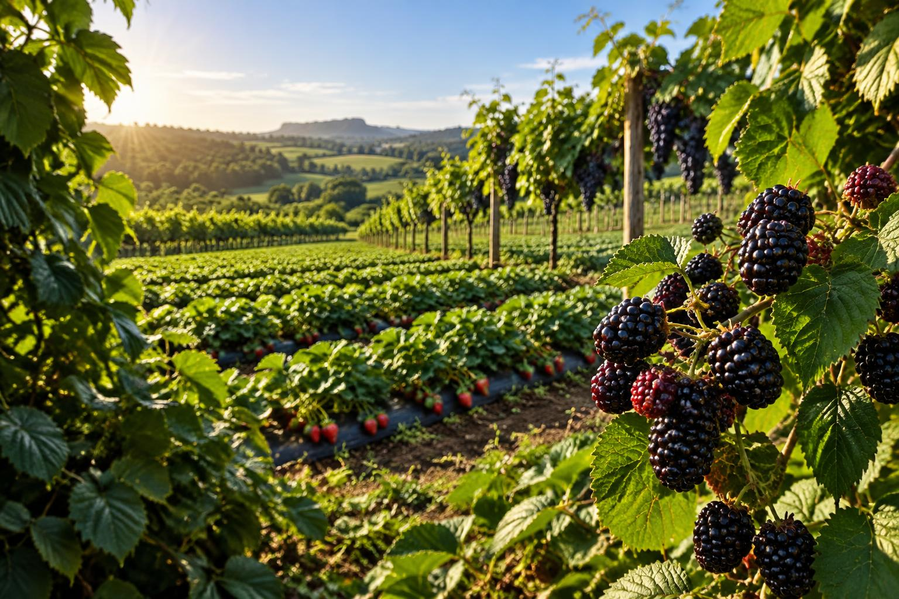
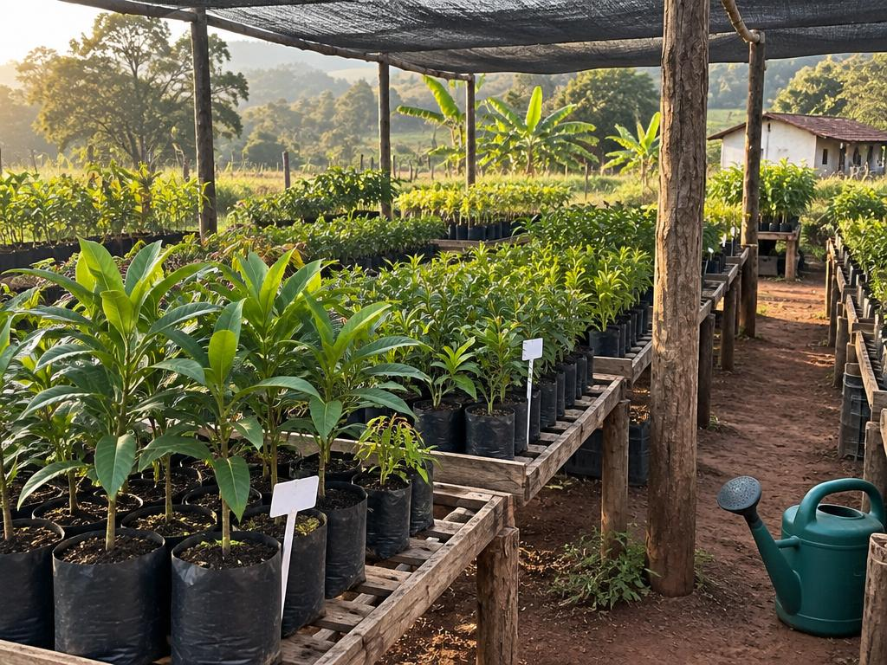
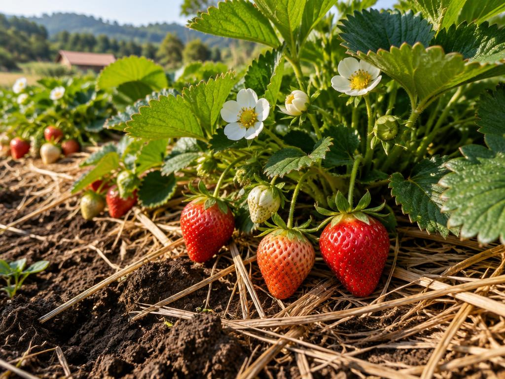
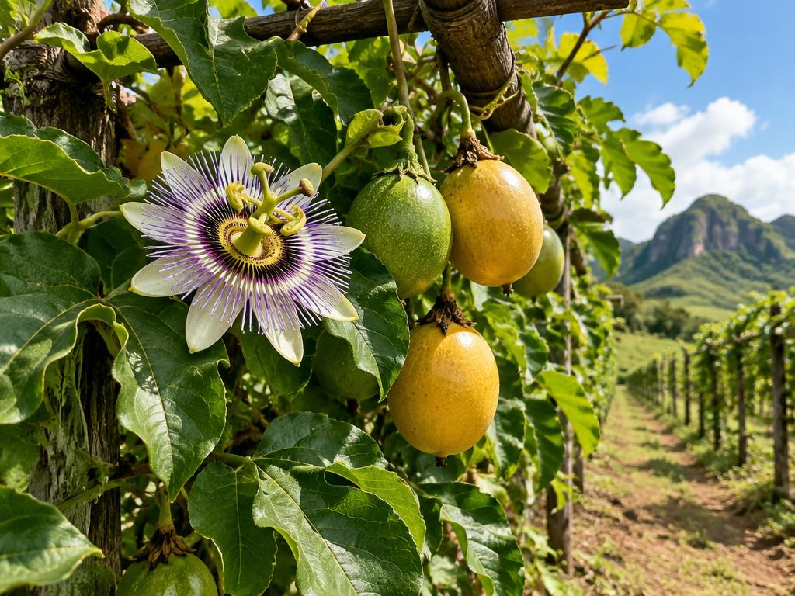
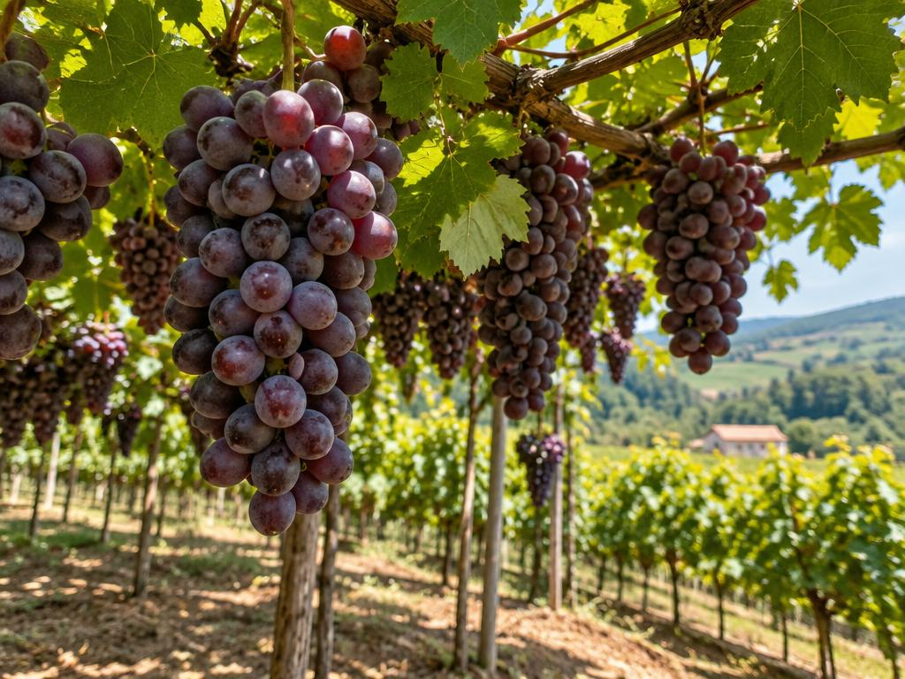
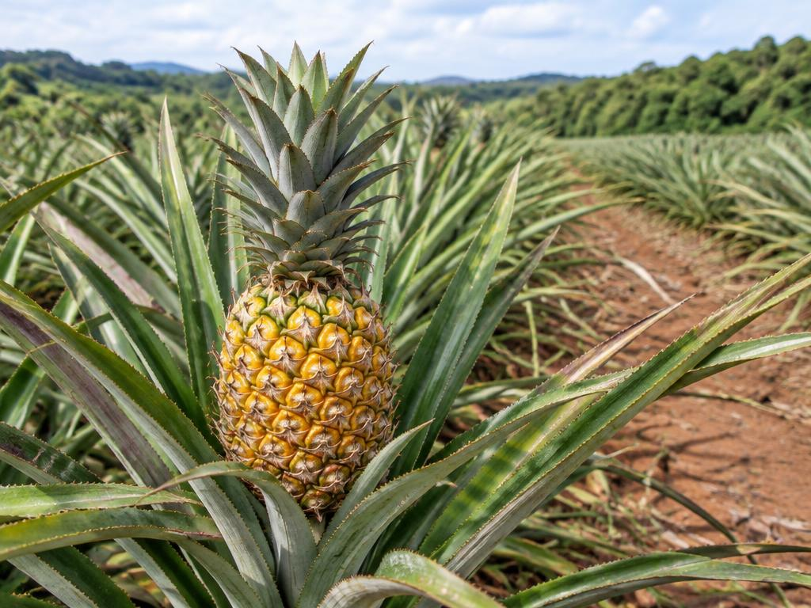
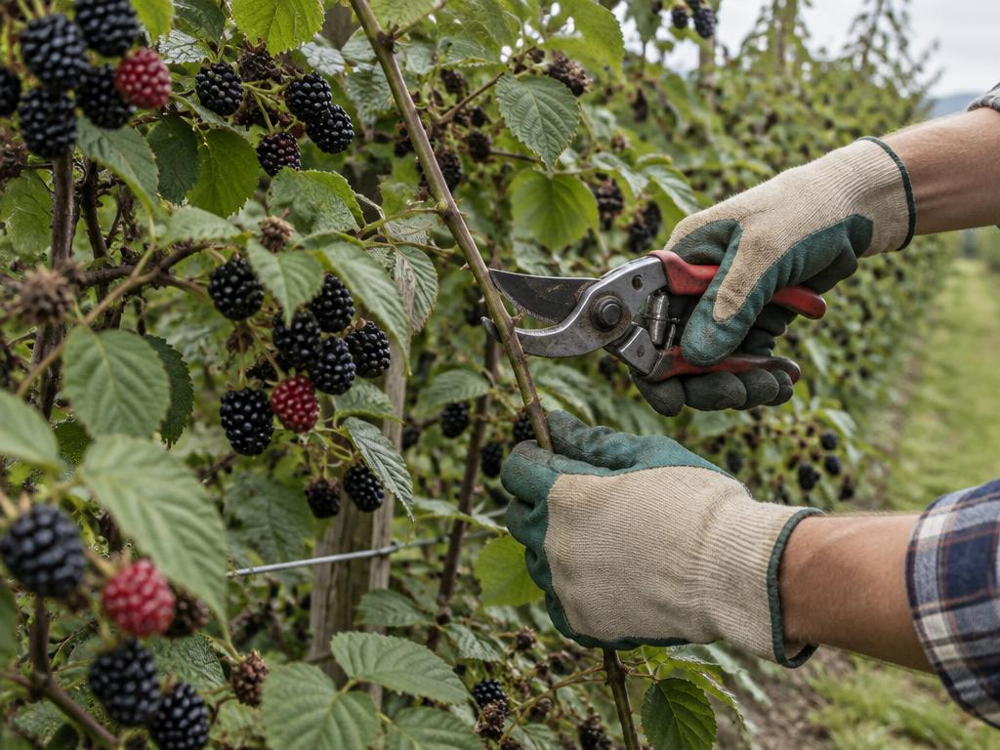
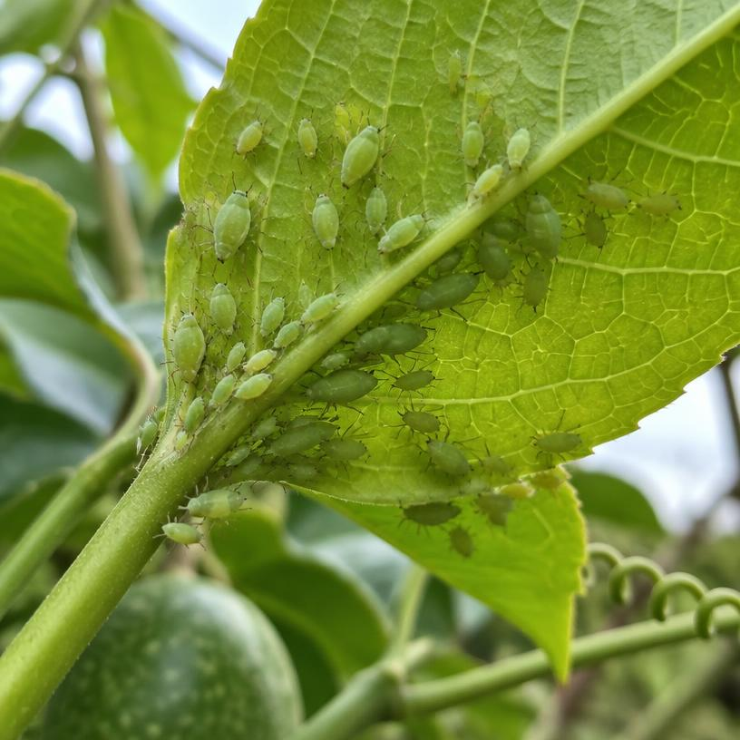
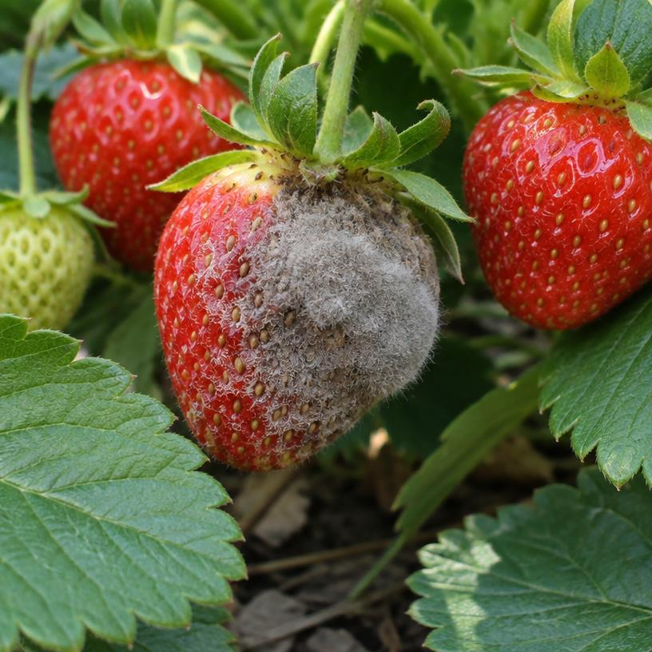
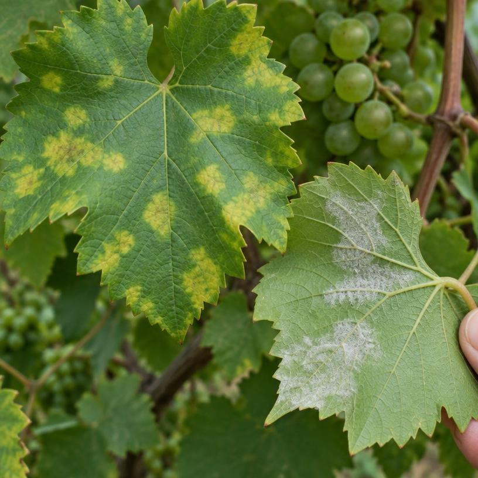

Pomicultura II
Frutas Pequenas
Um pomar inteiro para descobrir: a ciência do solo, o cuidado com as plantas e o sabor de colher o que se cultivou.
Toda fruta conta uma história que começa muito antes da primeira flor.
Este estudo se concentra em frutos de plantas herbáceas, arbustos e trepadeiras. O estudo prático se aprofunda em morango, maracujá e uva, com abacaxi como quarta cultura para comparar sistemas de plantio.
As épocas, distâncias e doses mudam conforme cultivar, clima e análise de solo. Este guia é uma referência de estudo: a construção do viveiro, o teste de solo, a poda, a colheita e a visita precisam ser feitos e documentados pelo próprio desbravador, com orientação local.
Primeiro, fazer nascer.

Viveiro não é estufa
Viveiro é o espaço de produção e desenvolvimento de mudas; pode ser a céu aberto ou protegido por sombrite. Estufa é uma estrutura coberta, geralmente com filme plástico, que modifica o microclima e ajuda a controlar chuva, temperatura e umidade. Uma estufa pode abrigar um viveiro, mas não é sinônimo dele.
Monte um pequeno viveiro
- Escolha local plano, com água próxima, boa ventilação, sol da manhã e proteção contra animais e enxurradas.
- Erga uma bancada drenante com madeira ou blocos e, se necessário, use sombrite leve acima dela.
- Preencha recipientes limpos e furados com substrato leve e de procedência conhecida; identifique espécie, cultivar e data.
- Plante mudas ou propágulos sadios, irrigue sem encharcar e retire folhas doentes. Endureça as mudas gradualmente ao sol antes do transplante.
Material de matriz produtiva, sem sintomas de vírus, fungos ou insetos; prefira mudas certificadas.
Raízes bem formadas, caule íntegro e crescimento equilibrado — nem fraco, nem estiolado.
Substrato úmido, aerado, com saída para o excesso de água e recipiente adequado.
Ajuste sombreamento, temperatura e época de produção à espécie e à região.
Escolha cultivar adaptada ao clima, ao fotoperíodo, ao solo e ao destino da fruta.
Observe sabor, produtividade, resistência, tempo de colheita, espaço e disponibilidade de polinizadores.
O solo fala. A gente precisa escutar.
A análise de solo mede acidez, nutrientes e outras características para orientar a escolha da cultura, a calagem e a adubação — evitando tanto deficiência quanto desperdício.
Teste antes de plantar
Separe áreas homogêneas. Retire folhas e restos da superfície; colete várias subamostras em zigue-zague na camada de 0–20 cm, misture-as em balde limpo e envie cerca de 300–500 g da amostra composta a um laboratório, identificada com talhão e profundidade. Para culturas perenes, peça orientação sobre amostragem em outras profundidades.
Drenagem é vida
Drenagem é a saída do excesso de água do solo. Sem ela, as raízes recebem pouco oxigênio e adoecem. Evite baixadas encharcáveis; melhore a estrutura com matéria orgânica, faça canteiros elevados para morangos, conduza água por valas/saídas apropriadas e, quando necessário, instale drenos com orientação técnica. Não descarregue água causando erosão.
O que é resistência?
É a capacidade de uma planta ou cultivar de sofrer menos danos por determinada praga, doença ou estresse — não é imunidade universal. Exemplos a considerar conforme a região: abacaxi BRS Vitória (resistência à fusariose), videira BRS Vitória (boa adaptação e resistência relativa a algumas doenças) e maracujá BRS Gigante Amarelo (boa tolerância à antracnose). Confirme as cultivares e desafios locais com assistência técnica.
Um pomar, diferentes caminhos.
Fichas de campo com planta adulta e fruto na mesma imagem. As recomendações abaixo são exemplos gerais para o Brasil: ajuste o calendário à sua região e a fertilização ao laudo do solo.

Morango
Fragaria × ananassaLocal & solo: pleno sol, clima ameno, solo fértil, leve e bem drenado; canteiros elevados e cobertura de palha ou filme mantêm frutos longe da terra. Plantio: mudas sadias no outono/inverno em muitas regiões de clima ameno; aprox. 25–35 cm entre plantas e 30–40 cm entre linhas no canteiro.
Nutrição & água: corrigir acidez e adubar pela análise; parcelar cobertura conforme orientação. Irrigar com frequência sem molhar excessivamente folhas e frutos. Retirar folhas velhas, estolhos indesejados e frutos doentes. Colher frutos vermelhos, com cálice, sem amassar.
Herbácea · colheita delicada
Maracujá-amarelo
Passiflora edulisLocal & solo: sol pleno, calor, solo profundo e drenado; instalar espaldeira e quebra-vento. Plantio: no início das chuvas, ou com irrigação; exemplo de espaçamento: 2–3 m entre plantas e 2,5–3 m entre linhas, ajustado ao sistema.
Nutrição & água: corrigir solo e adubar no plantio e em coberturas parceladas conforme análise. Irrigar regularmente, sobretudo na floração e frutificação. Conduzir haste até o arame e podar ramos secos/doentes. Mamangavas ajudam na polinização; colher frutos maduros caídos recentemente ou no ponto indicado para mercado.
Trepadeira · depende de polinização
Uva
Vitis spp.Local & solo: muito sol, circulação de ar e solo profundo sem encharcamento. Plantio: mudas enxertadas sadias, preferencialmente no período de repouso em regiões temperadas; na espaldeira, aprox. 1–1,5 m entre plantas e 2–2,5 m entre linhas (na latada, distâncias maiores).
Nutrição & água: calagem e adubação conforme análise, com correção antes de instalar o vinhedo. Irrigar segundo clima e solo; conduzir e podar conforme cultivar e sistema. Retirar cachos danificados e colher cortando o pedúnculo quando as bagas atingirem cor e sabor adequados: uvas não ficam mais doces depois de colhidas.
Vinha · condução e poda
Abacaxi
Ananas comosusLocal & solo: calor, sol pleno e solo leve, profundo, bem drenado e levemente ácido. Plantio: mudas sadias no início das chuvas; em fileiras duplas, um exemplo é 1,20 m entre pares, 0,40 m entre linhas do par e 0,40 m entre plantas.
Nutrição & água: análise define calagem e adubação; fósforo no plantio e nitrogênio/potássio parcelados sem atingir o miolo da planta. Irrigar na estiagem, controlar plantas invasoras e retirar folhas secas. Não exige poda de formação. Colher com pequena porção do pedúnculo, observando maturação e destino.
Herbácea · propagação por mudasDe que época estamos falando?
No Brasil, o calendário segue clima e disponibilidade de água, não uma data única: morango costuma aproveitar os meses amenos; videiras em clima temperado são plantadas no repouso; maracujá e abacaxi pegam melhor no começo das chuvas, quando não há irrigação. Uma região quente, fria, úmida ou semiárida pede adaptações.

Cuidar é observar todos os dias.
Do plantio à colheita
Escolha uma cultivar adequada à região e ao destino da fruta. Prepare o solo depois de conhecer o laudo; controle erosão e incorpore corretivos com antecedência, quando indicados. Plante mudas sadias sem enterrar o colo, firme a terra, irrigue e identifique cada linha. Adube somente conforme a necessidade medida; não concentre fertilizante junto às raízes. Observe umidade, folhas e flores semanalmente, retire partes doentes e mantenha boa ventilação. Faça a poda apropriada para cada espécie e época. Controle pragas com monitoramento, higiene, conservação de inimigos naturais e produtos registrados apenas com recomendação profissional. Colha no ponto certo, em recipientes limpos, e leve à sombra.
Demonstrando duas podas
Amoreira-preta: com tesoura desinfetada e luvas, elimine ramos secos, danificados e os que já produziram quando a cultivar e a época pedirem; preserve hastes vigorosas para a próxima safra e amarre-as ao suporte. Videira: identifique ramos produtivos e, no repouso vegetativo em regiões temperadas, retire madeira seca/doente e faça poda de formação ou frutificação conforme cultivar e sistema de condução. Corte limpo, sem rasgar, perto da gema correta. A demonstração real deve ser acompanhada pelo responsável pelo pomar: uma poda equivocada pode comprometer a safra.
Polinização, a parceria invisível
É a transferência do pólen da antera ao estigma de uma flor da mesma espécie; depois da fecundação, formam-se sementes e fruto. O polinizador é o agente que transporta esse pólen: abelhas, especialmente mamangavas no maracujá, são um exemplo. Morango, maracujá-amarelo e algumas cultivares de amora/framboesa se beneficiam da visita de insetos para boa frutificação; no maracujá-amarelo, a polinização cruzada costuma ser especialmente importante. Videiras cultivadas em geral se autopolinizam — não dependem normalmente de insetos.
O que quer dizer perecível?
Uma cultura perecível produz algo que perde rapidamente qualidade após a colheita por respiração, perda de água, machucados e microrganismos. Morango é altamente perecível. Higiene, sombra, manuseio delicado e resfriamento rápido são tão importantes quanto plantar bem.
Quanto tempo duram depois de colhidas?
| Fruta | Condição doméstica | Prazo aproximado | Para preservar melhor |
|---|---|---|---|
| Morango | Geladeira, 0–4 °C | 2–5 dias | Não lavar antes de guardar; retirar os mofados e manter em recipiente ventilado. |
| Maracujá | Ambiente fresco / geladeira | ~5–10 dias / 2–3 semanas | Guardar inteiro, sem ferimentos; a casca pode enrugar sem a polpa estar estragada. |
| Uva | Geladeira, 0–4 °C | ~5–10 dias | Manter cachos secos e íntegros; lavar só antes do consumo. |
| Abacaxi inteiro | Ambiente fresco / geladeira | ~1–3 dias / 3–5 dias | Depois de cortado, refrigerar em recipiente fechado e consumir em poucos dias. |
Prazos domésticos indicativos, não garantias: maturação na colheita, temperatura real e estado sanitário alteram muito a duração. Descarte frutas com mofo ou sinais de deterioração.
Reconhecer cedo faz diferença.
Exemplos frequentes para as culturas deste guia; a incidência depende da região. As imagens são ilustrações didáticas geradas, não diagnóstico laboratorial.

Pulgões
Atacam: brotações do maracujá e outras frutíferas; podem transmitir viroses. Prevenir/manejar: inspecionar brotos, retirar focos pequenos, controlar plantas hospedeiras e preservar joaninhas; evitar mudas contaminadas.

Mofo-cinzento
Ataca: flores e frutos de morango e uva. Prevenir/manejar: ventilar, evitar molhar frutos, usar cobertura do solo, remover frutos doentes e não deixá-los no canteiro.

Míldio da videira
Ataca: folhas e cachos de uva, favorecido por umidade. Prevenir/manejar: arejar a copa, monitorar após chuvas, remover restos infectados e consultar assistência técnica.
E as plantas daninhas?
Tiririca compete por água e nutrientes em canteiros e linhas de plantio; retire estruturas subterrâneas persistentes e cubra o solo. Capim-colonião e outros capins competem por luz e nutrientes nas entrelinhas; roçar antes de produzirem sementes e manter cobertura manejada. Identifique as espécies da sua área em fotos próprias antes de escolher o controle. Nunca use herbicidas ou defensivos sem orientação técnica e registro para a cultura.
Três formas de alimentar o solo
Melhora estrutura e retenção de água e fornece nutrientes gradualmente. Incorporar material bem decomposto antes do plantio, em dose orientada pelo solo.
O fósforo favorece raízes e estabelecimento; aplicar no preparo ou na cova conforme teor de P no laudo. Evitar dose “de receita” sem análise.
Nitrogênio sustenta crescimento; potássio participa da qualidade dos frutos. Parcelar coberturas conforme cultura, fase e análise, longe do colo e sem excessos.
Da amostra ao orçamento.
O teste do solo indica o que o terreno tem; cruzado com as exigências da cultura, indica o que falta. Só então se escolhe o adubo e se calcula o custo.
1. Área e escolha
Seis fileiras de 10 m, com 1 m entre linhas, ocupam 60 m² de faixa cultivada. Morango pode caber em canteiros bem drenados; maracujá e uva exigem espaçamentos e suportes diferentes, por isso não cabe presumir 6 fileiras de cada uma nesse mesmo arranjo.
2. Exemplo hipotético
Imagine recomendação ilustrativa de 30 g de determinado fertilizante por metro linear para morango. São 6 × 10 = 60 m lineares; 60 × 30 g = 1,8 kg. Se o preço local for R$ 8/kg, custo do produto usado = R$ 14,40.
3. Preencha com dados reais
Laudo: pH ___, P ___, K ___, matéria orgânica ___. Culturas possíveis ___. Recomendação do agrônomo ___ g/m (ou kg/ha). Preço cotado R$ ___/kg. Custo = dose × 60 m × preço, convertendo gramas em quilos. Registre também embalagem, frete e eventual calagem.
A dose de 30 g/m e o preço de R$ 8/kg são apenas uma demonstração matemática, não prescrição de adubação nem cotação atual. A atividade exige uma amostra real do pomar.
Colher também é cultivar.
Da planta para a mesa
Colha nas horas frescas, com mãos e caixas limpas. Separe frutos machucados, não empilhe em excesso e leve rapidamente à sombra. Para a família, prefira o sabor no ponto de maturação de consumo; para venda, considere transporte, firmeza, classificação e resfriamento. No morango, segure pelo pedúnculo e preserve o cálice; na uva, corte o cacho sem tocar demais nas bagas; no maracujá, recolha os frutos maduros sem deixá-los por muito tempo no chão.
Duas cultivares, uma fruta
Experimente, por exemplo, dois morangos identificados pelo produtor: Camarosa e Albion. Em frutos igualmente maduros, anote cor, brilho, tamanho, aroma, doçura/acidez, suculência e firmeza. Camarosa costuma apresentar fruto grande e firme; Albion pode oferecer sabor aromático e produção em dias neutros. O resultado sensorial deve vir da sua própria amostra, não de uma descrição pronta. Leve frutos reais ao avaliador.
O que pode crescer perto de você?
Sem saber sua cidade, não seria correto afirmar quais frutíferas existem na sua região. Use este painel visual para reconhecer espécies e, numa visita à feira, horta ou propriedade local, fotografe as plantas realmente encontradas, anotando município, data e nome da cultivar.
Por que cultivar frutas pequenas?
A fruticultura é o cultivo planejado de plantas que produzem frutos para consumo, processamento e comercialização. No caso desta especialidade, o olhar se volta especialmente para morangueiros, videiras, maracujazeiros e outras espécies herbáceas, arbustivas ou trepadeiras. Apesar das diferenças entre elas, todas dependem de mudas de boa origem, solo apropriado, água na medida certa e observação constante. Uma fruta bonita na banca é resultado de muitas decisões no campo.
Para as famílias, as frutas acrescentam variedade e prazer à alimentação. Oferecem água, fibras, vitaminas e outros compostos, com características diferentes conforme a espécie. Também podem ser consumidas frescas ou transformadas em polpas, geleias e sucos, o que ajuda a aproveitar parte da produção. É importante, porém, observar higiene e conservação: morangos se deterioram rapidamente; cachos de uva precisam de cuidado para não machucar as bagas; maracujás e abacaxis também têm seu ponto de colheita adequado.
No campo, a produção pode gerar trabalho em várias etapas: propagação de mudas, preparo de canteiros, instalação de espaldeiras, irrigação, poda, colheita, seleção, embalagem e venda. Em pequenas propriedades, a diversidade de culturas pode distribuir as atividades ao longo do ano e abrir oportunidades em feiras e mercados locais. O produtor precisa fazer contas: conhecer o solo evita gastar em fertilizantes sem necessidade, enquanto planejar irrigação, espaçamento e destino da fruta reduz perdas.
Cultivar bem também é cuidar do ambiente. Cobrir o solo diminui erosão e plantas daninhas; drenagem adequada protege as raízes; monitorar pragas cedo permite decisões mais responsáveis. Flores e polinizadores são parte da produção: sem a visita das mamangavas, por exemplo, o maracujá-amarelo pode frutificar mal. Preservar esses animais e evitar aplicações desnecessárias faz sentido agronômico e ecológico.
A característica mais valiosa da fruticultura talvez seja unir conhecimento e paciência. Não basta decorar uma tabela de adubação ou o nome de uma doença: é preciso observar folhas, comparar frutos, registrar resultados e aprender com o clima e com quem trabalha na terra. Ao montar um viveiro, testar o solo, podar com orientação e colher uma fruta no ponto, o desbravador entende que alimento não nasce na prateleira. Ele é fruto de planejamento, trabalho humano e responsabilidade com a vida.
Texto-base para o relatório de importância da fruticultura. Personalize com observações, culturas e dados da sua região antes de entregar.
Uma visita que vira aprendizado.
O requisito pede visitar uma propriedade frutícola e escrever um relato de pelo menos 300 palavras. Não é possível substituir uma experiência ainda não realizada por um relato inventado. Use o roteiro abaixo durante a visita e transforme suas anotações em texto próprio.
O que observar e perguntar
Identificação: nome da propriedade, município, data, nome e função de quem acompanhou a visita, culturas e cultivares presentes. Produção: origem das mudas, preparo e análise do solo, escolha do espaçamento, canteiros/espaldeiras, irrigação e fonte de água. Manejo: adubação, cobertura do solo, poda, polinizadores, pragas, doenças, plantas daninhas e formas de prevenção. Colheita: como se reconhece a maturação, frequência de colheita, seleção, embalagem, refrigeração e destino da produção. Experiência pessoal: atividade praticada, uma dificuldade que você observou, algo que surpreendeu e o que mudaria num pomar próprio.
Estrutura sugerida para 300+ palavras: apresente a propriedade e a razão da visita (aprox. 60 palavras); descreva o caminho da muda até a colheita (aprox. 130); registre manejo, desafios e comercialização (aprox. 80); conclua com sua experiência e aprendizado (aprox. 70). Inclua fotos tiradas no local, com autorização. Peça ao responsável que confirme nomes de cultivares e práticas antes de entregar o relato.
Também precisam de comprovação própria: foto do viveiro montado; laudo real do solo e orçamento; fotos de frutas da sua região; poda demonstrada em duas plantas; amostras colhidas e comparadas.